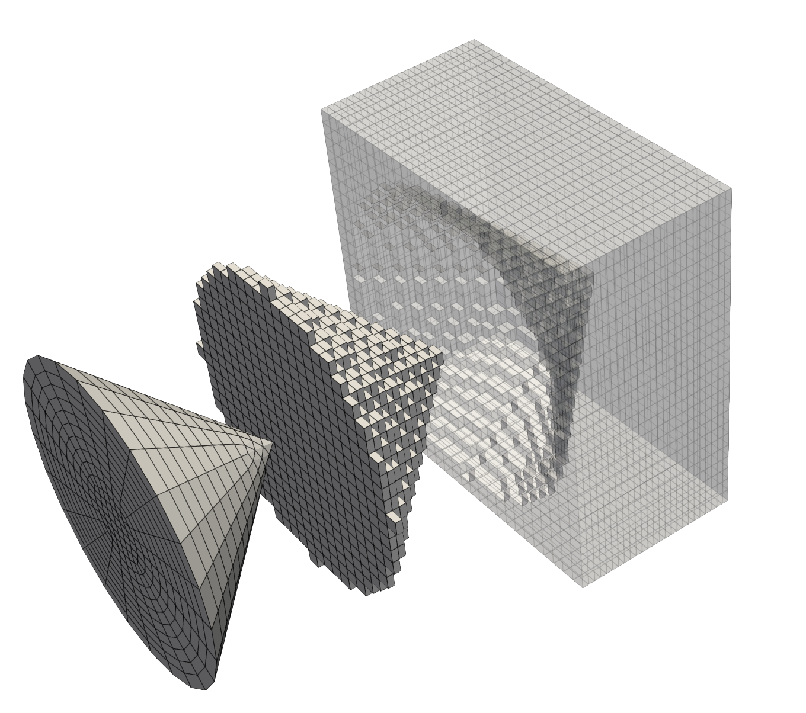

- block_idSubdomain id to assign.
C++ Type:unsigned short
Controllable:No
Description:Subdomain id to assign.
- inputThe mesh we want to modify.
C++ Type:MeshGeneratorName
Controllable:No
Description:The mesh we want to modify.
- manifoldThe mesh defining a closed manifold.
C++ Type:MeshGeneratorName
Controllable:No
Description:The mesh defining a closed manifold.
ManifoldSubdomainGenerator
Changes the subdomain ID of elements whose vertex-average point lies inside or outside a closed manifold defined by surface mesh.
Overview
ManifoldSubdomainGenerator assigns a subdomain ID based on whether an element's vertex-average point lies inside a closed surface mesh (a manifold). The surface must be watertight: every triangle must have exactly three neighboring triangles, all elements must be Tri3, and the mesh must be consistently oriented. Vertex-average points that lie on the surface within the configured tolerance are treated as inside.
The manifold is supplied as a mesh via the MeshGenerator pipeline, not as a raw file path. For example, to use an STL file, load it with FileMeshGenerator and apply any needed transforms with TransformGenerator before passing the result as "manifold".
commentnote
This generator uses Elem::vertex_average() as its representative point, not the true geometric centroid. That keeps the classification inexpensive and matches the sampling convention used by similar subdomain tagging generators.
Example
Basic usage
The example below loads a cube STL as the manifold, translates it into the mesh domain, and assigns subdomain 1 to the elements whose vertex-average points lie inside the closed surface.
[Mesh<<<{"href": "../../syntax/Mesh/index.html"}>>>]
[gmg]
type = GeneratedMeshGenerator<<<{"description": "Create a line, square, or cube mesh with uniformly spaced or biased elements.", "href": "GeneratedMeshGenerator.html"}>>>
dim<<<{"description": "The dimension of the mesh to be generated"}>>> = 3
nx<<<{"description": "Number of elements in the X direction"}>>> = 4
ny<<<{"description": "Number of elements in the Y direction"}>>> = 4
nz<<<{"description": "Number of elements in the Z direction"}>>> = 4
[]
[stl]
type = FileMeshGenerator<<<{"description": "Read a mesh from a file.", "href": "FileMeshGenerator.html"}>>>
file<<<{"description": "The filename to read."}>>> = cube_ascii.stl
[]
[scale]
type = TransformGenerator<<<{"description": "Applies a linear transform to the entire mesh.", "href": "TransformGenerator.html"}>>>
input<<<{"description": "The mesh we want to modify"}>>> = stl
transform<<<{"description": "The type of transformation to perform (TRANSLATE, TRANSLATE_CENTER_ORIGIN, TRANSLATE_MIN_ORIGIN, ROTATE, SCALE, ROTATE_WITH_MATRIX, ROTATE_EXT)"}>>> = SCALE
vector_value<<<{"description": "The value to use for the transformation. When using TRANSLATE or SCALE, the xyz coordinates are applied in each direction respectively. When using ROTATE, the values are interpreted as the Euler angles phi, theta and psi given in degrees. For ROTATE_EXT, an extrinsic rotation is carried out using prescribed Euler angles alpha, beta, and gamma in degrees."}>>> = '1 1 1'
[]
[rotate]
type = TransformGenerator<<<{"description": "Applies a linear transform to the entire mesh.", "href": "TransformGenerator.html"}>>>
input<<<{"description": "The mesh we want to modify"}>>> = scale
transform<<<{"description": "The type of transformation to perform (TRANSLATE, TRANSLATE_CENTER_ORIGIN, TRANSLATE_MIN_ORIGIN, ROTATE, SCALE, ROTATE_WITH_MATRIX, ROTATE_EXT)"}>>> = ROTATE
vector_value<<<{"description": "The value to use for the transformation. When using TRANSLATE or SCALE, the xyz coordinates are applied in each direction respectively. When using ROTATE, the values are interpreted as the Euler angles phi, theta and psi given in degrees. For ROTATE_EXT, an extrinsic rotation is carried out using prescribed Euler angles alpha, beta, and gamma in degrees."}>>> = '0 0 0'
[]
[translate]
type = TransformGenerator<<<{"description": "Applies a linear transform to the entire mesh.", "href": "TransformGenerator.html"}>>>
input<<<{"description": "The mesh we want to modify"}>>> = rotate
transform<<<{"description": "The type of transformation to perform (TRANSLATE, TRANSLATE_CENTER_ORIGIN, TRANSLATE_MIN_ORIGIN, ROTATE, SCALE, ROTATE_WITH_MATRIX, ROTATE_EXT)"}>>> = TRANSLATE
vector_value<<<{"description": "The value to use for the transformation. When using TRANSLATE or SCALE, the xyz coordinates are applied in each direction respectively. When using ROTATE, the values are interpreted as the Euler angles phi, theta and psi given in degrees. For ROTATE_EXT, an extrinsic rotation is carried out using prescribed Euler angles alpha, beta, and gamma in degrees."}>>> = '0.5 0.5 0.5'
[]
[apply]
type = ManifoldSubdomainGenerator<<<{"description": "Changes the subdomain ID of elements whose vertex-average point lies inside or outside a closed manifold defined by surface mesh.", "href": "ManifoldSubdomainGenerator.html"}>>>
input<<<{"description": "The mesh we want to modify."}>>> = gmg
manifold<<<{"description": "The mesh defining a closed manifold."}>>> = translate
block_id<<<{"description": "Subdomain id to assign."}>>> = 1
[]
[]Transforms are composed by chaining mesh generators. The listing above shows a scale step, a rotate step, and a translate step in sequence. Users may also limit reassignment to selected existing blocks with "restricted_subdomains", or tag elements that lie outside the manifold instead by setting "location" to OUTSIDE.
"surface_tolerance" is an absolute tolerance. Set it relative to the manifold length scale and the coordinate noise produced by the mesh export pipeline. If coincident vertices differ by more than this tolerance, the manifold validation step can reject an otherwise visually closed surface as non-watertight.
Voxelizing Surface Meshes
Another use case for this mesh generator is to voxelize a geometry defined by a surface. This is useful when tetrahedralization via XYZDelaunayGenerator may not produce a desired mesh, and representing the geometry perfectly is not important. This is useful for simulations, like fluid dynamics, where tetrahedrals are not desired for the simulation. The idea is to create an "easy" volumetric mesh, i.e. a structured grid, and remove elements inside or outside of the manifold. Below is an example of creating a manifold of a cone and voxelizing using a structured grid.
[Mesh<<<{"href": "../../syntax/Mesh/index.html"}>>>]
[disk]
type = ConcentricCircleMeshGenerator<<<{"description": "This ConcentricCircleMeshGenerator source code is to generate concentric circle meshes.", "href": "ConcentricCircleMeshGenerator.html"}>>>
num_sectors<<<{"description": "num_sectors % 2 = 0, num_sectors > 0Number of azimuthal sectors in each quadrant'num_sectors' must be an even number."}>>> = 6
radii<<<{"description": "Radii of major concentric circles"}>>> = '0.9'
rings<<<{"description": "Number of rings in each circle or in the enclosing square"}>>> = '10'
has_outer_square<<<{"description": "It determines if meshes for a outer square are added to concentric circle meshes."}>>> = false
preserve_volumes<<<{"description": "Volume of concentric circles can be preserved using this function."}>>> = false
[]
[cone]
type = ParsedNodeTransformGenerator<<<{"description": "Applies a transform to a the x,y,z coordinates of a Mesh", "href": "ParsedNodeTransformGenerator.html"}>>>
input<<<{"description": "The mesh we want to modify"}>>> = disk
z_function<<<{"description": "Function for the updated z component of the node"}>>> = '0.9 - sqrt(x * x + y * y)'
[]
[surface_quads]
type = StitchMeshGenerator<<<{"description": "Allows multiple mesh files to be stitched together to form a single mesh.", "href": "StitchMeshGenerator.html"}>>>
inputs<<<{"description": "The input MeshGenerators."}>>> = 'cone disk'
stitch_boundaries_pairs<<<{"description": "Pairs of boundaries to be stitched together between the 1st mesh in inputs and each consecutive mesh"}>>> = 'outer outer'
clear_stitched_boundary_ids<<<{"description": "Whether or not to clear the stitched boundary IDs"}>>> = true
[]
[background]
type = GeneratedMeshGenerator<<<{"description": "Create a line, square, or cube mesh with uniformly spaced or biased elements.", "href": "GeneratedMeshGenerator.html"}>>>
dim<<<{"description": "The dimension of the mesh to be generated"}>>> = 3
nx<<<{"description": "Number of elements in the X direction"}>>> = 25
ny<<<{"description": "Number of elements in the Y direction"}>>> = 25
nz<<<{"description": "Number of elements in the Z direction"}>>> = 25
xmin<<<{"description": "Lower X Coordinate of the generated mesh"}>>> = -1
xmax<<<{"description": "Upper X Coordinate of the generated mesh"}>>> = 1
ymin<<<{"description": "Lower Y Coordinate of the generated mesh"}>>> = -1
ymax<<<{"description": "Upper Y Coordinate of the generated mesh"}>>> = 1
zmax<<<{"description": "Upper Z Coordinate of the generated mesh"}>>> = 1
[]
[surface]
type = ElementsToSimplicesConverter<<<{"description": "Splits all non-simplex elements in a mesh into simplices.", "href": "ElementsToSimplicesConverter.html"}>>>
input<<<{"description": "Input mesh to convert to all-simplex mesh"}>>> = surface_quads
[]
[tag]
type = ManifoldSubdomainGenerator<<<{"description": "Changes the subdomain ID of elements whose vertex-average point lies inside or outside a closed manifold defined by surface mesh.", "href": "ManifoldSubdomainGenerator.html"}>>>
input<<<{"description": "The mesh we want to modify."}>>> = background
manifold<<<{"description": "The mesh defining a closed manifold."}>>> = surface
block_id<<<{"description": "Subdomain id to assign."}>>> = 1
[]
[remove]
type = BlockDeletionGenerator<<<{"description": "Mesh generator which removes elements from the specified subdomains", "href": "BlockDeletionGenerator.html"}>>>
input<<<{"description": "The mesh we want to modify"}>>> = tag
block<<<{"description": "The list of blocks to be processed (deleted or kept)"}>>> = '0'
[]
[]Note that ElementsToSimplicesConverter is used to convert the QUAD elements of the original surface to TRI elements, required by this generator. One can voxelize either the inside or outside of the manifold with the "location" parameter. The figure below show the resulting volumetric meshes.

Voxelizing a cone using ManifoldSubdomainGenerator. Left is the manifold surface mesh, center the resulting voxelization of the cone, and right is the resulting voxelization of the space around the cone.
Input Parameters
- block_nameOptional subdomain name to assign.
C++ Type:SubdomainName
Controllable:No
Description:Optional subdomain name to assign.
- locationINSIDEControl whether the manifold interior or exterior is tagged.
Default:INSIDE
C++ Type:MooseEnum
Controllable:No
Description:Control whether the manifold interior or exterior is tagged.
- restricted_subdomainsOnly reset subdomain ID for given subdomains.
C++ Type:std::vector<SubdomainName>
Controllable:No
Description:Only reset subdomain ID for given subdomains.
- surface_tolerance1e-10Absolute geometric tolerance used for manifold validation and near-surface classification. Choose this relative to the STL length scale and expected coordinate noise.
Default:1e-10
C++ Type:Real
Unit:(no unit assumed)
Range:surface_tolerance>0
Controllable:No
Description:Absolute geometric tolerance used for manifold validation and near-surface classification. Choose this relative to the STL length scale and expected coordinate noise.
Optional Parameters
- enableTrueSet the enabled status of the MooseObject.
Default:True
C++ Type:bool
Controllable:No
Description:Set the enabled status of the MooseObject.
- save_with_nameKeep the mesh from this mesh generator in memory with the name specified
C++ Type:std::string
Controllable:No
Description:Keep the mesh from this mesh generator in memory with the name specified
Advanced Parameters
- nemesisFalseWhether or not to output the mesh file in the nemesisformat (only if output = true)
Default:False
C++ Type:bool
Controllable:No
Description:Whether or not to output the mesh file in the nemesisformat (only if output = true)
- outputFalseWhether or not to output the mesh file after generating the mesh
Default:False
C++ Type:bool
Controllable:No
Description:Whether or not to output the mesh file after generating the mesh
- show_infoFalseWhether or not to show mesh info after generating the mesh (bounding box, element types, sidesets, nodesets, subdomains, etc)
Default:False
C++ Type:bool
Controllable:No
Description:Whether or not to show mesh info after generating the mesh (bounding box, element types, sidesets, nodesets, subdomains, etc)